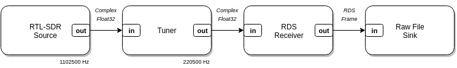

Embedding LuaRadio
This document describes how to embed LuaRadio into applications, and how applications can source or sink samples with LuaRadio flow graphs.
Table of Contents
Introduction
LuaRadio can be run directly from its Lua file sources, but when it is
installed, it is packaged into one dual-purpose binary library called
libluaradio.
This library can both be loaded as the radio package by the LuaJIT
interpreter for scripts, and linked into C/C++ applications to be run via its C
API. The packaged library contains the entire LuaRadio framework, bytecode
compiled, as well as a small C API for creating LuaRadio contexts, loading
scripts with a top-level flow graph, and controlling the top-level flow graph.
A LuaRadio packaged library installation provides the following:
/usr/bin/luaradio— LuaRadio runner helper script/usr/lib/libluaradio.so— Shared library for dynamic linking/usr/lib/libluaradio.a— Static library for static linking/usr/include/luaradio.h— C API header file/usr/lib/lua/5.1/radio.so-symlink->/usr/lib/libluaradio.so— Lua module
Dynamically linking libluaradio.so and libluajit-5.1.so into an application
enables it to run LuaRadio scripts. Statically linking the static equivalent of
these libraries allows building entirely standalone executables with LuaRadio.
C API Synopsis
The LuaRadio packaged library includes a small C API
that wraps the details of Lua states and the radio package. This simplified
interface provides for creating a LuaRadio context, loading a script with a
top-level flow graph, and the basic control functions of the top-level flow
graph (start, status, wait, stop).
/* Create a new LuaRadio context. */
luaradio_t *luaradio_new(void);
/* Load a script that returns a LuaRadio flow graph. */
int luaradio_load(luaradio_t *radio, const char *script);
/* Start a LuaRadio flow graph. */
int luaradio_start(luaradio_t *radio);
/* Get the running status of a LuaRadio flow graph. */
int luaradio_status(luaradio_t *radio, bool *running);
/* Wait for a LuaRadio flow graph to finish. */
int luaradio_wait(luaradio_t *radio);
/* Stop a LuaRadio flow graph. */
int luaradio_stop(luaradio_t *radio);
/* Free a LuaRadio context. */
void luaradio_free(luaradio_t *radio);
/* Get the Lua state of a LuaRadio context. */
lua_State *luaradio_get_state(luaradio_t *radio);
/* Get a human readable error message for the last error that occurred. */
const char *luaradio_strerror(luaradio_t *radio);
/* Get LuaRadio version info */
const char *luaradio_version(void);
unsigned int luaradio_version_number(void);
const luaradio_version_t *luaradio_version_info(void);
The C API also defines the C types corresponding to the four basic data types
radio.types.ComplexFloat32,
radio.types.Float32,
radio.types.Bit, and
radio.types.Byte, under complex_float32_t,
float32_t, bit_t, byte_t, respectively.
In basic usage of the API, applications create a LuaRadio context with
luaradio_new(), load a script that returns a top-level flow graph with
luaradio_load(), and start the flow graph with luaradio_start().
After this, luaradio_status(), luaradio_wait(), and luaradio_stop() can
be used to get the running status of the flow graph, wait on the flow graph to
finish, or stop the flow graph, respectively. These calls correspond to the
CompositeBlock methods of the same
name.
When the flow graph is terminated and work with the context is complete, the
context can be freed with luaradio_free().
In more advanced usage, applications may access the Lua state of the LuaRadio
context with luaradio_get_state() . Applications can use this with the Lua C
API to prepare a custom environment for scripts prior to loading them.
Most API functions return 0 on success or a negative integer code on failure.
luaradio_new() returns NULL on memory allocation failure.
luaradio_strerror() can be used to get a human-readable error string of the
last failure that occurred.
The API is re-entrant, as all relevant state is maintained in the luaradio_t
context.
Interfacing Samples
An application may source or sink samples in a LuaRadio flow graph through a
pair of connected file descriptors, e.g. from pipe() or socketpair(). A
file descriptor can be handed off to LuaRadio as a parameter to a
RawFileSource, if the application is
sourcing samples, or a RawFileSink, if
the application is sinking samples, or both.
The application can then use standard file descriptor I/O calls read() or
write() on its file descriptor to serialize samples from or to LuaRadio. The
application must know the C type of the samples, as the samples are read and
written raw, in their native memory representation, with no marshalling.
In the case of an application sinking samples of a variable-sized
Object based data type (e.g. for a
decoded packet type), the JSONSink can be
used. This sink accepts a file descriptor parameter, like the RawFileSink,
but serializes individual samples with JSON, separated by a newline delimiter.
The application can split each serialized sample by the newline delimiter, and
deserialize the sample with JSON.
In the examples below, file descriptor hand-off and parameter passing happens through string substitution of a script template. This solution is simple and demonstrates how to embed a LuaRadio script, but is inherently prone to unintended errors and injection.
The recommended approach for applications adding support for user defined
LuaRadio scripts is to use the Lua C
API with the underlying Lua
state of the LuaRadio context (see luaradio_get_state()) to define a custom
environment. For example, the application might define an environment
containing variables with the source and sink file descriptors, or even
pre-instantiated RawFileSource and RawFileSink blocks, that can be used in
the user defined scripts as sources from or sinks to the application.
Aside
Embedding LuaRadio means embedding an interpreter and framework that is not native to the application. This is powerful when the goal is to provide the user with the ability to define arbitrary radio scripts, but it’s not as satisfying when the goal is to leverage LuaRadio as a signal processing engine for a pre-defined flow graph, because the flow graph blocks do not feel like first-class citizens to the application. On the other hand, the alternative — binding every block into a language — adds other layers of complexity like code generation and mapping types.
Examples
FM Radio
The FM Radio example is a command-line FM broadcast radio receiver, built with
a small flow graph containing an
RtlSdrSource, a
WBFMMonoDemodulator, and a
PulseAudioSink. It accepts the
station frequency from the command-line and substitutes it into the flow graph
script.

This example demonstrates basic use of the C API.
#include <stdio.h>
#include <stdlib.h>
#include <unistd.h>
#include <luaradio.h>
const char *script_template =
"local frequency = %f\n"
"return radio.CompositeBlock():connect("
" radio.RtlSdrSource(frequency - 250e3, 1102500),"
" radio.TunerBlock(-250e3, 200e3, 5),"
" radio.WBFMMonoDemodulator(),"
" radio.DownsamplerBlock(5),"
" radio.PulseAudioSink(1)"
")";
int main(int argc, char *argv[]) {
luaradio_t *radio;
char script[512];
if (argc < 2) {
fprintf(stderr, "Usage: %s <FM station frequency>\n", argv[0]);
return -1;
}
/* Substitute station frequency in script template */
snprintf(script, sizeof(script), script_template, atof(argv[1]));
/* Create context */
if ((radio = luaradio_new()) == NULL) {
perror("Allocating memory");
return -1;
}
/* Load flow graph */
if (luaradio_load(radio, script) < 0) {
fprintf(stderr, "Error loading flow graph: %s\n", luaradio_strerror(radio));
return -1;
}
/* Start flow graph */
if (luaradio_start(radio) < 0) {
fprintf(stderr, "Error starting flow graph: %s\n", luaradio_strerror(radio));
return -1;
}
/* Wait until completion */
if (luaradio_wait(radio) < 0) {
fprintf(stderr, "Error waiting for flow graph: %s\n", luaradio_strerror(radio));
return -1;
}
/* Free context */
luaradio_free(radio);
return 0;
}
This example may be built in the embed directory with make examples.
luaradio/embed $ make examples
...
luaradio/embed $ export LD_LIBRARY_PATH=build
luaradio/embed $ ./build/examples/fm-radio
Usage: ./build/examples/fm-radio <FM station frequency>
luaradio/embed $
Listen to 91.1 MHz:
luaradio/embed $ ./build/examples/fm-radio 91.1e6
Note: there is no need to set LD_LIBRARY_PATH if LuaRadio is installed, as
libluaradio.so.0 will be in a library search path like /usr/lib.
RDS Timesync
Radio Data Service (RDS) is a digital protocol used by FM broadcast radio stations to transmit metadata about the station and its programming. This protocol is most commonly known for providing station and song text information with “RadioText” messages, but the standard specifies a variety of other message types (see the RDS Standard (PDF)). One message type in particular — type 4A (see pg. 28) — contains time and date information. RDS-enabled FM radio stations transmit it once every minute.
The RDS timesync example is a command-line tool that sets the system time and
date to an RDS-enabled FM radio station. It is built with a small flow graph
containing an RtlSdrSource, an
RDSReceiver, and a
RawFileSink. The frames decoded by the
RDS receiver are serialized to the C application through the RawFileSink. The
C application scans for the time and date message type, and once it finds one,
decodes it and sets the system time and date to it.

This example demonstrates how to serialize samples from a LuaRadio flow graph to an application.
#include <stdio.h>
#include <stdlib.h>
#include <stdint.h>
#include <unistd.h>
#include <time.h>
#include <sys/time.h>
#include <luaradio.h>
const char *script_template =
"local frequency = %f\n"
"return radio.CompositeBlock():connect("
" radio.RtlSdrSource(frequency - 250e3, 1102500),"
" radio.TunerBlock(-250e3, 200e3, 5),"
" radio.RDSReceiver(),"
" radio.RawFileSink(%d)"
")";
/* radio.RDSFramerBlock.RDSFrameType */
typedef struct {
uint16_t blocks[4];
} rds_frame_t;
static time_t rds_decode_time(const rds_frame_t *time_frame) {
/* See RDS Standard 3.1.5.6, pg. 28 */
/* Extract modified julian date, hour, minute */
uint32_t mjd = ((time_frame->blocks[1] & 0x3) << 15) | ((time_frame->blocks[2] & 0xfffe) >> 1);
uint32_t hour = ((time_frame->blocks[2] & 0x1) << 4) | ((time_frame->blocks[3] & 0xf000) >> 12);
uint32_t minute = ((time_frame->blocks[3] >> 6) & 0x3f);
/* See RDS Standard Annex G, pg. 81 */
/* Convert modified julian date to year, month, day */
uint32_t yp = (uint32_t)(((float)mjd - 15078.2) / 365.25);
uint32_t mp = (uint32_t)(((float)mjd - 14956.1 - ((uint32_t)((float)yp * 365.25))) / 30.6001);
uint32_t k = (mp == 14 || mp == 15) ? 1 : 0;
uint32_t day = mjd - 14956 - ((uint32_t)((float)yp * 365.25))-((uint32_t)((float)mp * 30.6001));
uint32_t month = mp - 1 - k * 12;
uint32_t year = yp + k;
/* Convert hour, minute, year, month, day to time_t */
struct tm tm = {
.tm_sec = 0, .tm_min = minute, .tm_hour = hour,
.tm_mday = day, .tm_mon = month - 1, .tm_year = year,
.tm_isdst = -1,
};
return timegm(&tm);
}
int main(int argc, char *argv[]) {
luaradio_t *radio;
char script[512];
int sink_fds[2];
rds_frame_t frame;
if (argc < 2) {
fprintf(stderr, "Usage: %s <FM station frequency>\n", argv[0]);
return -1;
}
/* Create a pair of connected file descriptors with pipe() */
if (pipe(sink_fds) < 0) {
perror("pipe()");
return -1;
}
/* Substitute station frequency and write fd of pipe in script template */
snprintf(script, sizeof(script), script_template, atof(argv[1]), sink_fds[1]);
/* Create context */
if ((radio = luaradio_new()) == NULL) {
perror("Allocating memory");
return -1;
}
/* Load flow graph */
if (luaradio_load(radio, script) < 0) {
fprintf(stderr, "Error loading flow graph: %s\n", luaradio_strerror(radio));
return -1;
}
/* Start flow graph */
if (luaradio_start(radio) < 0) {
fprintf(stderr, "Error starting flow graph: %s\n", luaradio_strerror(radio));
return -1;
}
for (unsigned int frame_count = 1; ; frame_count++) {
/* Read RDS frame from read fd of pipe */
if (read(sink_fds[0], &frame, sizeof(frame)) != sizeof(frame)) {
perror("read()");
return -1;
}
printf("\rRDS frames received: % 5d", frame_count);
/* Check if it's a time frame (group = 0x4, version = 0x0) */
uint32_t group = (frame.blocks[1] >> 12) & 0xf;
uint32_t version = (frame.blocks[1] >> 11) & 0x1;
if (group == 0x4 && version == 0) {
printf("\nRDS time frame found!\n");
break;
}
}
/* Stop flow graph */
if (luaradio_stop(radio) < 0) {
fprintf(stderr, "Error stopping flow graph: %s\n", luaradio_strerror(radio));
return -1;
}
/* Decode the time */
time_t t = rds_decode_time(&frame);
printf("Setting system time to %s", ctime(&t));
/* Set system time */
struct timeval tv = { .tv_sec = t, .tv_usec = 0 };
if (settimeofday(&tv, NULL) < 0) {
perror("settimeofday()");
return -1;
}
/* Free context */
luaradio_free(radio);
return 0;
}
This example may be built in the embed directory with make examples.
luaradio/embed $ make examples
...
luaradio/embed $ export LD_LIBRARY_PATH=build
luaradio/embed $ ./build/examples/rds-timesync
Usage: ./build/examples/fm-radio <FM station frequency>
luaradio/embed $
Sync time and date with 88.5 MHz:
luaradio/embed $ ./build/examples/rds-timesync 88.5e6
RDS frames received: 443
RDS time frame found!
Setting system time to Tue May 10 23:11:00 2016
luaradio/embed $
Note: there is no need to set LD_LIBRARY_PATH if LuaRadio is installed, as
libluaradio.so.0 will be in a library search path like /usr/lib.
Building
Dynamically Linked
Compile the examples and link them with the libluaradio and libluajit-5.1
shared libraries:
$ clang fm-radio.c -o fm-radio -lluaradio -lluajit-5.1 -Wl,-E
$ clang rds-timesync.c -o rds-timesync -lluaradio -lluajit-5.1 -Wl,-E
You may need to add header and library paths with -I and -L, respectively,
if LuaRadio is not installed to standard paths.
We can check with ldd that these executables only depend on standard
libraries, libluaradio, and libluajit-5.1:
$ ldd fm-radio
linux-vdso.so.1 (0x00007ffc76d3a000)
libluaradio.so.0 => /usr/lib/libluaradio.so.0 (0x00007f566ac4f000)
libluajit-5.1.so.2 => /usr/lib/libluajit-5.1.so.2 (0x00007f566a9df000)
libc.so.6 => /usr/lib/libc.so.6 (0x00007f566a63e000)
libm.so.6 => /usr/lib/libm.so.6 (0x00007f566a33a000)
libdl.so.2 => /usr/lib/libdl.so.2 (0x00007f566a136000)
libgcc_s.so.1 => /usr/lib/libgcc_s.so.1 (0x00007f5669f20000)
/lib64/ld-linux-x86-64.so.2 (0x00007f566ae83000)
$ ldd rds-timesync
linux-vdso.so.1 (0x00007fff82f42000)
libluaradio.so.0 => /usr/lib/libluaradio.so.0 (0x00007f648bc19000)
libluajit-5.1.so.2 => /usr/lib/libluajit-5.1.so.2 (0x00007f648b9a9000)
libc.so.6 => /usr/lib/libc.so.6 (0x00007f648b608000)
libm.so.6 => /usr/lib/libm.so.6 (0x00007f648b304000)
libdl.so.2 => /usr/lib/libdl.so.2 (0x00007f648b100000)
libgcc_s.so.1 => /usr/lib/libgcc_s.so.1 (0x00007f648aeea000)
/lib64/ld-linux-x86-64.so.2 (0x00007f648be4d000)
$
Statically Linked
Compile the examples and link them with the libluaradio and libluajit
static libraries:
$ clang fm-radio.c -o fm-radio -Wl,--whole-archive,-E libluaradio.a -Wl,--no-whole-archive libluajit.a -ldl -lm
$ clang rds-timesync.c -o rds-timesync -Wl,--whole-archive,-E libluaradio.a -Wl,--no-whole-archive libluajit.a -ldl -lm
The libluajit.a static library can be obtained from LuaJIT/src/libluajit.a
after building LuaJIT locally.
After stripping symbols, these standalone executables contain the entire LuaJIT + LuaRadio runtime in 640 KB:
$ du -h fm-radio rds-timesync
716K fm-radio
716K rds-timesync
$ strip fm-radio rds-timesync
$ du -h fm-radio rds-timesync
640K fm-radio
640K rds-timesync
$
We can check with ldd that these executables only depend on standard libraries:
$ ldd fm-radio
linux-vdso.so.1 (0x00007fff08556000)
libdl.so.2 => /usr/lib/libdl.so.2 (0x00007f9095e02000)
libm.so.6 => /usr/lib/libm.so.6 (0x00007f9095afe000)
libgcc_s.so.1 => /usr/lib/libgcc_s.so.1 (0x00007f90958e8000)
libc.so.6 => /usr/lib/libc.so.6 (0x00007f9095547000)
/lib64/ld-linux-x86-64.so.2 (0x00007f9096006000)
$ ldd rds-timesync
linux-vdso.so.1 (0x00007ffe7fdfe000)
libdl.so.2 => /usr/lib/libdl.so.2 (0x00007fc708814000)
libm.so.6 => /usr/lib/libm.so.6 (0x00007fc708510000)
libgcc_s.so.1 => /usr/lib/libgcc_s.so.1 (0x00007fc7082fa000)
libc.so.6 => /usr/lib/libc.so.6 (0x00007fc707f59000)
/lib64/ld-linux-x86-64.so.2 (0x00007fc708a18000)
$